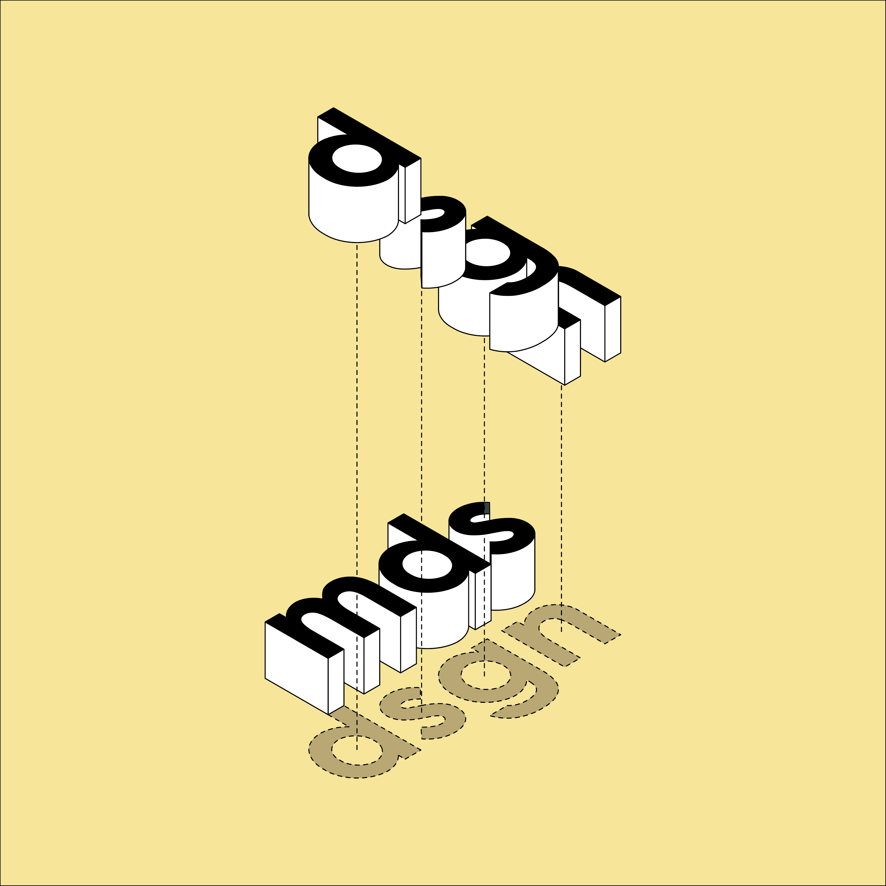

Michael is a Fremantle based designer who has been working in the residential building industry for 10+ years.
In 2014, Michael began studying to become an architect at Curtin University (hopefully he’ll be finished soon 🤞🏻).
It was from studying architecture that Michael wanted to create alternative homes, to ensure we make the most of the land we choose to build on.
This is what Michael Dos Santos Design would like to focus on, simplistic designs to help create a sustainable future.